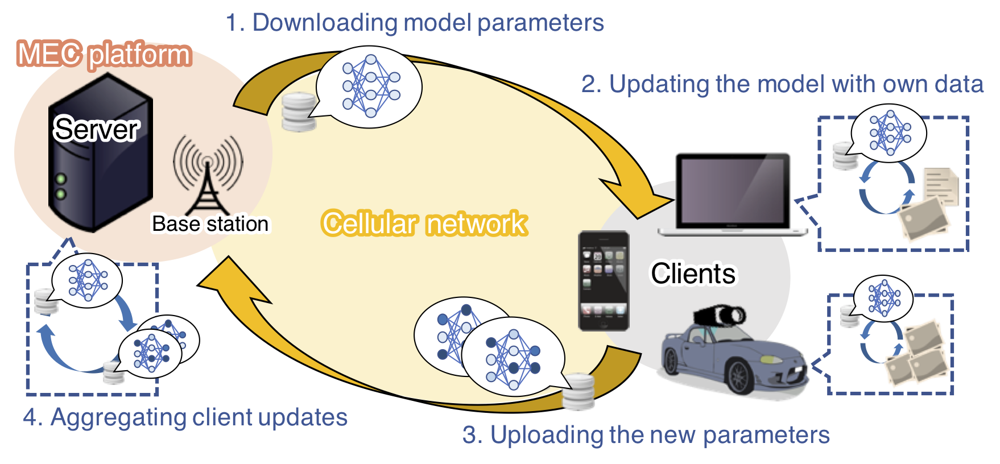
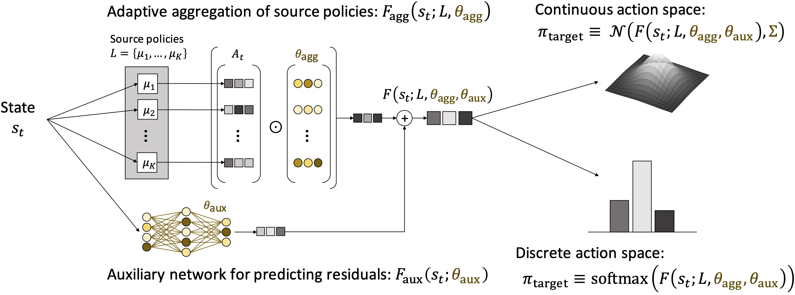
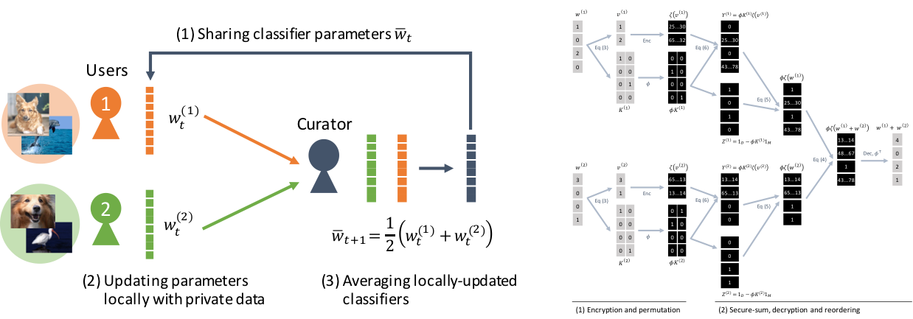

Decentralized Learning
 MULTIPOLAR @ IJCAI'20
MULTIPOLAR @ IJCAI'20
A variety of modern AI products are powered by cutting-edge machine learning (ML) technologies, which range from face detection and language translation installed on smartphones to voice recognition and speech synthesis used in virtual assistants such as Amazon Alexa and Google Home. Therefore, the development of such AI products typically necessitates a large-scale data which are essential to train high-performance ML models like a deep neural network. One common approach to collecting large-scale data is crowdsourcing, namely, asking people in the world to provide own data. However, crowd-sourcing is not always useful when we are interested in collecting human activity data like first-person videos and other life-logging videos; such data often include private moments of people in their everyday life and could be used to compromise their privacy.
So how can we leverage a large amount of distributed (and private) data for machine learning? A decentralized learning is arguably one of the most promising solutions. Unlike a standard centralized training that stores all training data on a single server or multiple well-organized servers, decentralized learning frameworks ask people having data to download a trainable model, update it using own data, and upload the new model parameters to a server. The server then aggregates updates sent from the people to obtain a better trained model. By iterating this training cycle one can obtain a high-performance model that has been trained on a very-large and distributed data. One of the emerging frameworks to enable the decentralized learning is Federated Learning that allows one to train a deep neural network using tailored update techniques called Federated Averaging.
We are interested in how to make decentralized learning frameworks more practical. In particular, our works below focus on how model exchanges between the server and clients could be more efficient or secure for a variety of learning tasks.
Our Projects
Client Selection for Federated Learning (ICC'19)
 We envision a mobile edge computing (MEC) framework for machine learning (ML) technologies, which leverages distributed client data and computation resources for training high-performance ML models while preserving a client privacy. Toward this future goal, this work aims to extend Federated Learning (FL), which enables privacy-preserving training of models, to work with heterogeneous clients in a practical cellular network. The FL protocol iteratively asks random clients to download a trainable model from a server, update it with own data, and upload the updated model to the server, while asking the server to aggregate multiple client updates to further improve the model. While clients in this protocol are free from disclosing own private data, the overall training process can become inefficient when some clients are with limited computational resources (i.e., requiring longer update time) or under poor wireless channel conditions (longer upload time). Our new FL protocol, which we refer to as FedCS, mitigates this problem and performs FL efficiently while actively managing clients based on their resource conditions. Specifically, FedCS solves a client selection problem with resource constraints, which selects the maximum possible number of clients who can complete the FL’s download, update, and upload steps within a certain deadline. This selection strategy results in the server aggregating as many client updates as possible and accelerating performance improvement in ML models (e.g., classification accuracy.) We conducted an experimental evaluation using publicly-available large-scale image datasets to train deep neural networks on MEC environment simulations. The experimental results show that FedCS is able to complete its training process in a significantly shorter time compared to the original FL protocol.
- Takayuki Nishio and Ryo Yonetani: “Client Selection for Federated Learning with Heterogeneous Resources in Mobile Edge”, IEEE International Conference on Communications (ICC), 2019 [Paper]
Transfer RL via Multi-source Policy Aggregation (IJCAI'20)
 Transfer reinforcement learning (RL) aims at improving the learning efficiency of an agent by exploiting knowledge from other source agents trained on relevant tasks. However, it remains challenging to transfer knowledge between different environmental dynamics without having access to the source environments. In this work, we explore a new challenge in transfer RL, where only a set of source policies collected under diverse unknown dynamics is available for learning a target task efficiently. To address this problem, the proposed approach, MULTI-source POLicy AggRegation (MULTIPOLAR), comprises two key techniques. We learn to aggregate the actions provided by the source policies adaptively to maximize the target task performance. Meanwhile, we learn an auxiliary network that predicts residuals around the aggregated actions, which ensures the target policy’s expressiveness even when some of the source policies perform poorly. We demonstrated the effectiveness of MULTIPOLAR through an extensive experimental evaluation across six simulated environments ranging from classic control problems to challenging robotics simulations, under both continuous and discrete action spaces.
- Mohammadamin Barekatain, Ryo Yonetani, and Masashi Hamaya, “MULTIPOLAR: Multi-Source Policy Aggregation for Transfer Reinforcement Learning between Diverse Environmental Dynamics”, International Joint Conference on Artificial Intelligence (IJCAI), 2020 [Paper] [Code] [Blog]
Adaptive Distillation for Federated Learning (ICPR'20)
This paper addresses the problem of decentralized learning to achieve a high-performance global model by asking a group of clients to share local models pre-trained with their own data resources. We are particularly interested in a specific case where both the client model architectures and data distributions are diverse, which makes it nontrivial to adopt conventional approaches such as Federated Learning and network co-distillation. To this end, we propose a new decentralized learning method called Decentralized Learning via Adaptive Distillation (DLAD). Given a collection of client models and a large number of unlabeled distillation samples, the proposed DLAD 1) aggregates the outputs of the client models while adaptively emphasizing those with higher confidence in given distillation samples and 2) trains the global model to imitate the aggregated outputs. Our extensive experimental evaluation on multiple public datasets (MNIST, CIFAR-10, and CINIC-10) demonstrates the effectiveness of the proposed method.
- Jiaxin Ma, Ryo Yonetani, and Zahid Iqbal, “Adaptive Distillation for Decentralized Learning from Heterogeneous Clients”, International Conference on Pattern Recognition (ICPR), 2020 [Paper] [Blog]
Privacy-Preserving Visual Learning (ICCV'17)
 We propose a privacy-preserving framework for learning visual classifiers by leveraging distributed private image data. This framework is designed to aggregate multiple classifiers updated locally using private data and to ensure that no private information about the data is exposed during its learning procedure. We utilize a homomorphic cryptosystem that can aggregate the local classifiers while they are encrypted and thus kept secret. To overcome the high computational cost of homomorphic encryption of high-dimensional classifiers, we (1) impose sparsity constraints on local classifier updates and (2) propose a novel efficient encryption scheme named doubly-permuted homomorphic encryption (DPHE) which is tailored to sparse high-dimensional data. DPHE (i) decomposes sparse data into its constituent non-zero values and their corresponding support indices, (ii) applies homomorphic encryption only to the non-zero values, and (iii) employs double permutations on the support indices to make them secret. Our experimental evaluation on several public datasets demonstrates that the proposed approach significantly outperforms other privacy-preserving methods and achieves comparable performance against state-of-the-art visual recognition methods without privacy preservation.
- Ryo Yonetani, Vishnu Naresh Boddeti, Kris M. Kitani, Yoichi Sato: “Privacy-Preserving Visual Learning Using Doubly Permuted Homomorphic Encryption”, International Conference on Computer Vision (ICCV), 2017 [Paper]
Ryo Yonetani
OMRON SINIC X